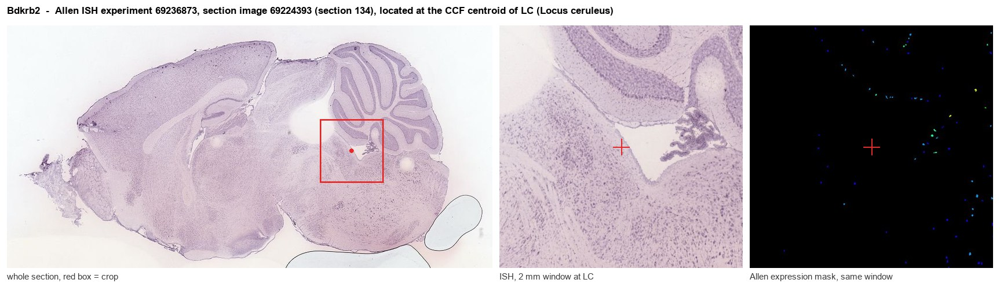
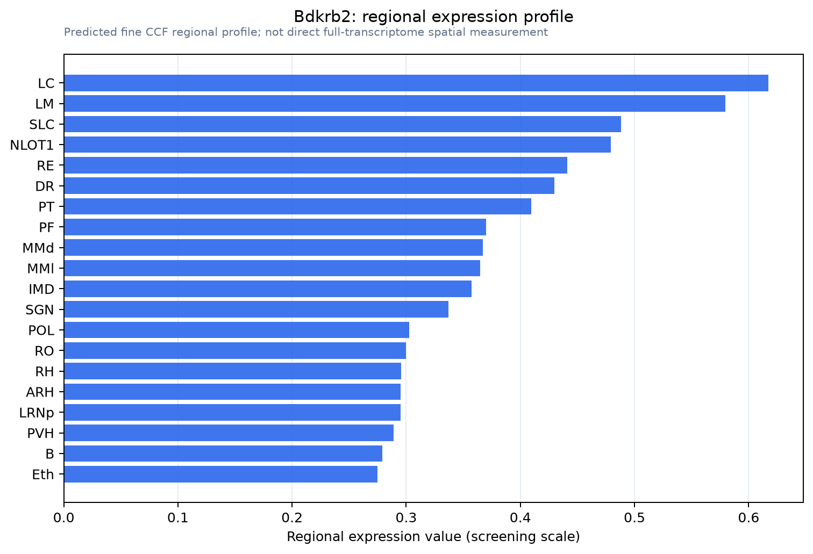

Bdkrb2
B2 bradykinin receptor (B2R) (BK-2 receptor)
Spatial tier: REGION_BIASED · Class: GPCR · Top region: LC (Locus ceruleus) · Positive regions: 31/554
43.6Discovery Score
36.4Targetability Score
CEvidence grade C
What this means: Bdkrb2: fine CCF profile is region-biased toward LC (top regions: LC, LM, SLC, NLOT1, RE); this is a discovery lead, not direct proof.
Function in LC: evidence, prediction, innovation
- Gene function
- Bdkrb2 encodes the bradykinin B2 receptor, a constitutively expressed Gq- and Gi-coupled GPCR for the kinin peptides bradykinin and kallidin. Ligand binding drives phospholipase C, IP3/Ca2+ release and PKC, and in endothelium triggers eNOS-dependent nitric oxide production. It mediates vasodilation, plasma extravasation, inflammatory pain and transient blood-brain barrier opening.
- Region function
- The locus ceruleus is the pons' principal noradrenergic nucleus, supplying most cortical, hippocampal and cerebellar norepinephrine and setting arousal, vigilance, attentional shifting and stress reactivity.
- Published in this region
- none No region-specific literature found. The closest findings are that central B2 receptors act on neurons and not only vessels (Tavares et al. 2026: striatal Bdkrb2 loss alters anxiety and motivational behaviour in male mice), that presynaptic bradykinin receptors modulate 3H-noradrenaline release in mouse tissues (Trendelenburg et al. 2000), and that B2R agonism is used to open the blood-brain barrier (Gagnon et al. 2023).
- Predicted function
- Prediction: B2R here is probably dual-compartment, on the dense pontine capillary bed where kinins couple inflammation to barrier permeability and perfusion, and on or near tyrosine hydroxylase neurons where Gq signalling would depolarize them and raise norepinephrine release, as bradykinin does at peripheral noradrenergic terminals. Icatibant or conditional Bdkrb2 deletion in Dbh-Cre neurons should blunt inflammation-evoked locus ceruleus firing and cortical norepinephrine release, predicting reduced sickness-associated hyperarousal without altered baseline sleep-wake state.
- Innovation
- ★★★★★ 5/5 Kinin signalling in the brain's main noradrenergic nucleus is unstudied despite excellent pharmacology and an obvious neuroinflammation-arousal link.
- Tools
- Bdkrb2 knockout mice; antagonist icatibant (HOE-140); agonists bradykinin and stabilised analogues; anti-B2R antibodies; locus ceruleus access via Dbh-Cre, Net (Slc6a2)-Cre, Th-Cre and the PRSx8 noradrenergic enhancer AAV.
- References
Direct evidence located at the region

Allen ISH experiment 69236873, section image 69224393 (section 134): the section that contains the CCF centroid of Locus ceruleus according to the Allen image-to-atlas alignment (reference_to_image), with a 2 mm window around that point. Left: whole section, red box = window. Middle: ISH signal. Right: Allen's expression-mask view of the same window. open this image in the Allen viewer
Look it up yourself: Allen Mouse Brain ISH for Bdkrb2Allen reference atlas: LC (structure 147)ABC Atlas MERFISH viewer(in the ABC Atlas choose dataset MERFISH-C57BL6J-638850-CCF, colour cells by gene "Bdkrb2" or by parcellation_substructure "LC")All genes confined to LC + 3-D brain
Direct spatial evidence
MERFISH REGION LOCATOR

Regional expression figure

Predicted WMB × fine-CCF profile; not direct full-transcriptome spatial measurement.
Spatial profile
Evidence and specificity
- Evidence status
- PREDICTED_FINE
- Direct sources
- None; predicted localization only
- Exclusive threshold
- 12 positive regions out of 554
- Spatial specificity
- 0.295
- Top-region fraction
- 0.049
- Filter status
- PASS
Interpretation limits
- Cell-type-to-region projection is imputed expression, not direct spatial measurement.
- Adult reference atlases do not establish stability across age, sex, strain, state, or disease.
- Transcript abundance does not guarantee protein abundance or genetic-tool performance.